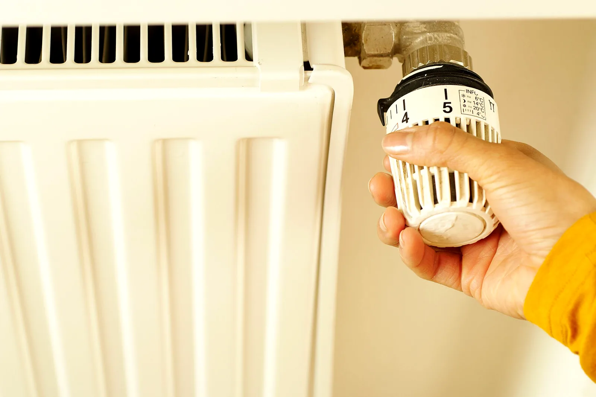

Why your boiler keeps losing pressure
Topping it up every week isn't a quirk of your boiler — it's a leak, a vessel or a valve. One of the three is an easy fix.
Read itWhich half of the radiator is cold tells you whether you need a 30-second job with a bleed key or a proper flush.
This is the most useful diagnostic in domestic heating and it takes ten seconds. Put your hand flat on the radiator, top and bottom, while the heating has been on a while. Which half is cold tells you what's wrong.
Air rises, so it collects at the top of the radiator and stops hot water reaching that section. That's a bleed key, thirty seconds and a tea towel.
If the same radiator fills with air again within a few weeks, that's not normal. Air is getting in somewhere — a small leak drawing in, or corrosion generating hydrogen inside the system. Both are worth looking at rather than bleeding forever.
Magnetite — black iron oxide sludge — is heavier than water, so it settles along the bottom of the radiator and builds into a bed that hot water can't get through. The top still heats because water flows across the top of the sludge.
You can't bleed this out. Options, simplest first:

If one radiator is stone cold from top to bottom while the rest of the house is warm, look at the two valves at either end. A thermostatic valve whose pin has stuck down is extremely common, especially on one that's been turned off all summer. Pull the plastic head off and you'll see a small brass pin — if it's stuck, freeing it or replacing the head often fixes the whole thing.
Water takes the easy route. Radiators near the boiler get more flow than the ones at the end of the run, and unless the system has been balanced, the far bedroom loses. Balancing means throttling the lockshield valve on the closest radiators so the flow is shared properly. It needs no parts at all, takes a couple of hours to do properly across a house, and makes a bigger difference than people expect.
Before you ring anyone: do the hand test on every radiator and write down which half is cold on each. That one piece of information tells an engineer more over the phone than ten minutes of description, and it usually gets you an answer on the spot.
Topping it up every week isn't a quirk of your boiler — it's a leak, a vessel or a valve. One of the three is an easy fix.
Read it
Manchester water isn't the hardest in England, but a scaled heat exchanger will still cost you hot water and gas — and it happens quietly.
Read it
Who is allowed to connect it, why the stability chain matters, and the tightness test that nobody watches being done.
Read itStraight through to Mohammad Ejaz. No call centre, no hold music.